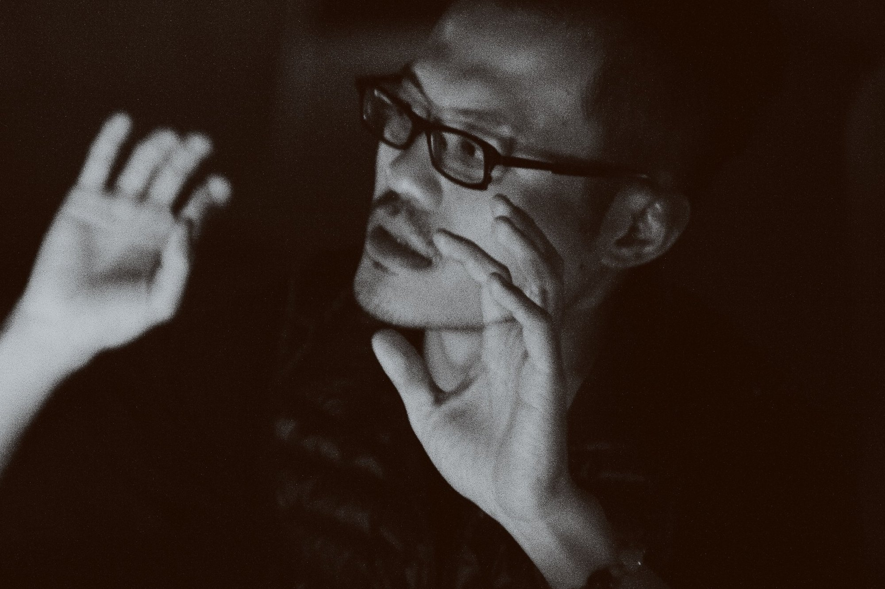
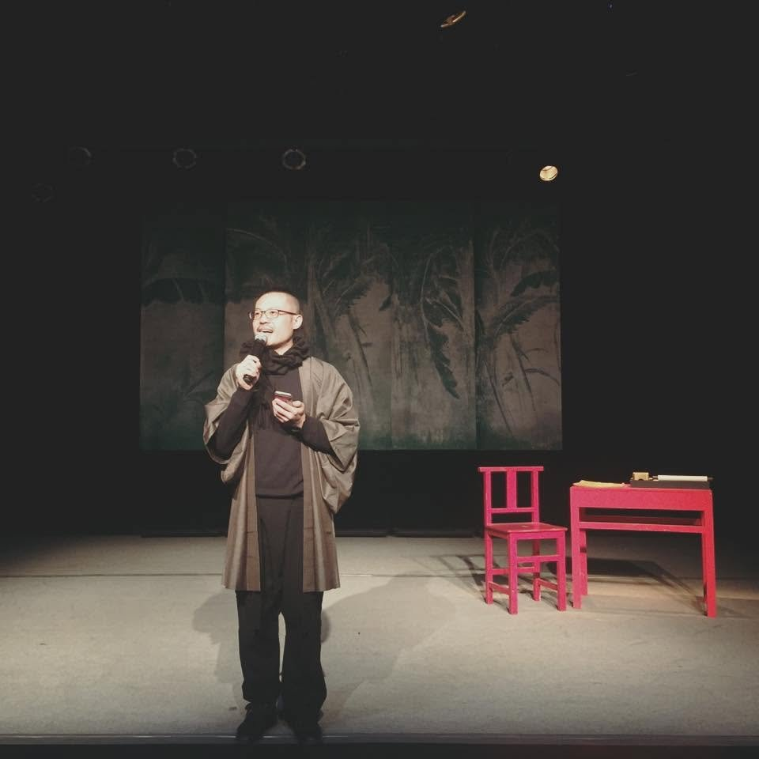
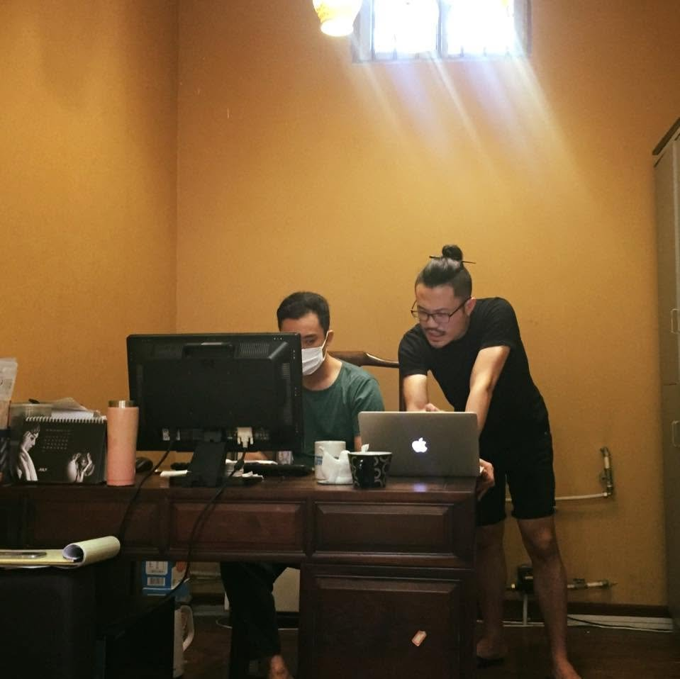
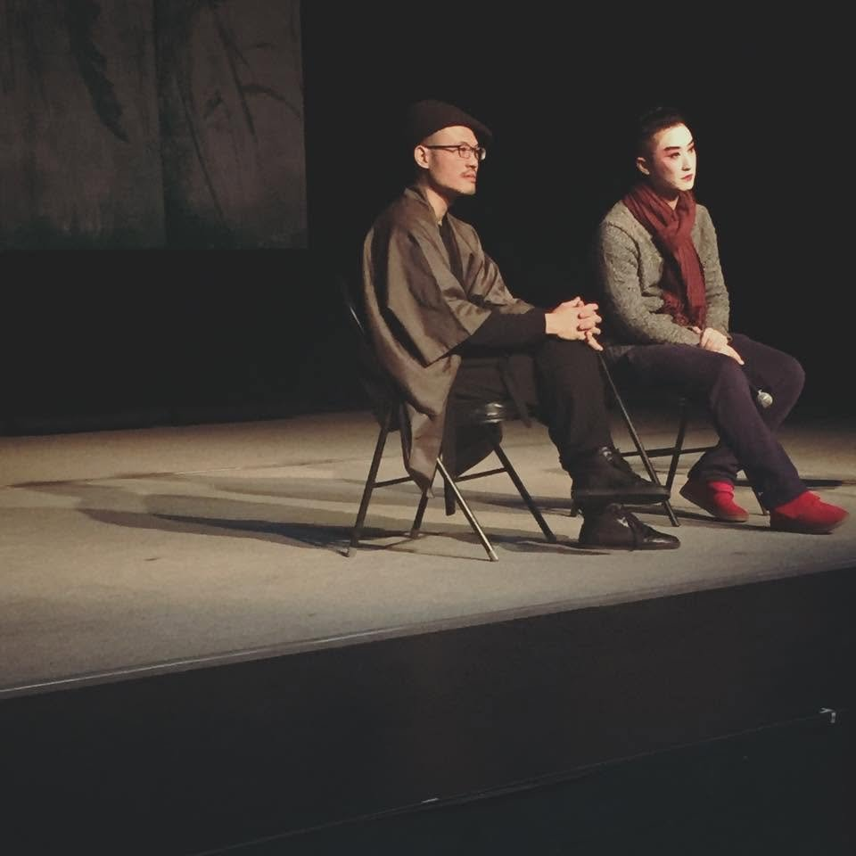
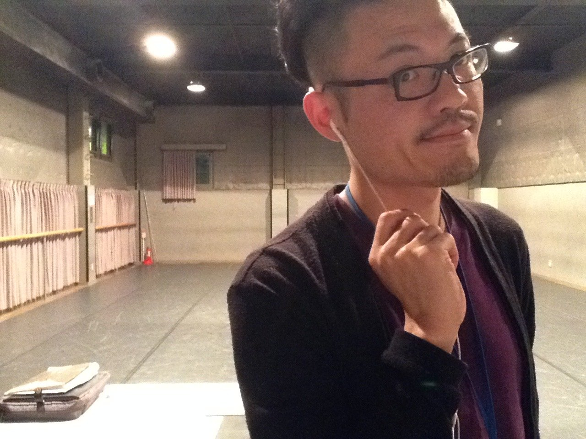

劉亮延，1991年畢業於國立臺東師院附設實驗小學六年五班。2006年創立李清照私人劇團感傷動作派。2015年取得國立交通大學社會與文化研究所文學博士。2024年起任教於國立臺東大學兒童文學研究所。著有劇作集《婦女生活十一種》（2021），詩集《牡丹刑》（2008）《有鬼》（2002）《你那菊花的年代》（1999）。編導劇目二十餘齣，策劃執行演出逾四百場，並製作四張專輯：《曹七巧》劇場原創音樂原聲帶（2008）、《馬伯司氏：劉欣然爵士京劇同名專輯》（2017）、《湘蘭圖：爵士臺灣戲曲現場收音專輯》（2024）、《歌仔曹七巧：台灣爵士戲曲專輯》（2025）。
童話的啟蒙讀本是《三隻小豬》。大野狼一吹氣，房子就全倒，這個畫面他一直記得，以致颱風至今在他眼裡都還是童話。他對草屋與木屋的屋主始終同情不捨，也覺得故事加在他們身上的道德評價莫名其妙，反叛之心從這裡開始。後來經歷地震，他知道磚房一樣會倒，反而替大野狼委屈，也為《三隻小豬》嫌貧愛富、幸災樂禍的階級觀念感到難過。兒時的閱讀啟蒙是英文漢聲出版社1982年出版的十二冊《中國童話》，古裝、妖怪、苦命青衣與大俠刺客，很早就成為他的平行宇宙，也讓他與現代社會長期格格不入。30歲以來投身戲曲創作，他才確認這是童年閱讀史留下的創傷。
Liu Liang-Yen graduated in 1991 from Class 5, Grade 6, of the primary school attached to National Taitung Teachers College. In 2006 he founded the Physical Sentimental Theatre Company of Lee Qing Zhao the Private. He received his Ph.D. in Literature from the Institute of Social Research and Cultural Studies, National Chiao Tung University, in 2015, and has taught at the Graduate Institute of Children's Literature, National Taitung University, since 2024. He is the author of the play collection Eleven Kinds of Women's Lives (2021) and three books of poems, Ordeal on Peony (2008), Ghosts (2002), and Your Chrysanthemum Years (1999). He has written and directed more than twenty productions, produced over four hundred performances, and made four albums: Tsao Chi-chiao: Original Theatre Soundtrack (2008), Lady Macbeth: Liu Hsin-jan's Jazz Jingju Album (2017), Lady Orchid: A Live-Recorded Jazz Taiwanese Xiqu Album (2024), and Tsô Tshit Khá: A Taiwanese Jazz Xiqu Album (2025).
His first reader in fairy tales was The Three Little Pigs. The wolf huffs, and the houses fall down: the picture never left him, and to this day a typhoon still looks to him like something out of a storybook. He has always felt sorry for the pigs who built in straw and in wood, and never understood what they had done to deserve the moral of the story; that is where his rebelliousness began. Then he lived through an earthquake, learned that brick houses fall down too, and started to feel that the wolf had been hard done by, and that a story which fawns on the well-off, sneers at the poor, and cheers at other people's misfortune was a sad thing to give a child. His reading proper began with the twelve volumes of Chinese Fairy Tales that Echo Publishing brought out in 1982. Period costume, monsters, long-suffering qingyi heroines, and knight-errant assassins became his parallel universe very early, and have kept him out of step with the modern world ever since. Only after he turned thirty and threw himself into xiqu did he confirm what it was: the trauma left by his childhood reading.

研究領域：視覺文化研究、表演藝術研究、跨文化戲劇（曲）製作、創意寫作、劇場導演。
研究與創作對我而言是同一件事。知識系統使我處理題材時有方向，批判方法決定我的觀點，寫作與劇場排練則是感覺的積極行動。
「創作不能教」已經成為共識，藝術市場的邏輯無疑接受它：作品的價值來自卓越與成功，而卓越與成功無法培養，只能等待它罕見偶然出現。這個共識比表面上更難拆解，因為它同時包含兩個主張，而這兩個主張形成的世界觀相隔將近一百年。
第一層是天賦論。艾略特在〈Tradition and the Individual Talent〉（1919）中主張，傳統無法被繼承，想要它就必須付出巨大的勞動去取得；所謂個人才能，是在既有作品構成的秩序中被辨認出來的位置，不是先於秩序存在的稟賦。創作的能力自然可以被描述、被傳授、被檢驗。
第二層是競爭論，也就是把成功的作品看成優勝劣敗的結果。我以松茸作為反例。Anna Tsing 在 The Mushroom at the End of the World: On the Possibility of Life in Capitalist Ruins（2015）中指出，松茸並非生長於原始林，而是生長於被砍伐、被廢棄的人為擾動地。它無法被人工栽培，卻依賴人類活動所造成的破壞；它是規劃失敗之後的產物，不是規劃成功的結果。Tsing 據此提出 salvage accumulation，說明資本如何從自身無法控制的過程中撿拾價值：松茸被高價交易，卻始終不能被工業化生產。
我從這兩個立場中看見自己的工作。藝術不是資本加工的產品，卻同樣在市場中被分級與交易；它的生成場所是消耗、淘汰與失敗所留下的次生地。被丟棄的排練、寫壞的稿子、演過一次就不再演的作品，不是通往成功的過渡，它們就是那片林地本身。作品是剩餘，不是勝利。紀念因此是我持續工作的動力。
2016年取得國立交通大學社會與文化研究所文學博士，2017年起進入大學任教。我的研究方向被教學持續改變。任教單位依序是東華大學藝術創意產業學系、中正大學台灣文學與創意應用研究所、東海大學表演藝術與創作碩士學位學程、臺東大學兒童文學研究所，跨越四個不同學科，挑戰我每一次都要把同一個問題換一種語言文化重講一次；講不通的地方，就是我的文化認識還不夠的地方。研究對象因此一再調整。在工藝產品學系的時期，我處理複製與譜記的問題，寫成〈抄襲即原創：《關於大野一雄》與舞譜〉，刊於《藝術評論》第43期（2022），頁31–84（THCI），以川口隆夫2013年的單人作品為對象，經由土方巽對歌舞伎的翻譯與理解說明戰後前衛藝術運動的承襲關係，並分析女形表演與影像之間的譜記關係。在台灣文學研究所的時期，問題轉向大眾劇場史的重新評估，2022年5月20日於國立清華大學發表〈解嚴前大眾劇場史再探：重讀李喬《藍彩霞的春天》〉，修訂後收入《千面李喬》論文集（臺北：萬卷樓，2023），頁399–436；相關的還有2021年5月14日在中國文化大學發表的〈脫籍從良與文人暴力：一個戲曲的思想史問題〉。
進入兒童文學研究所之後，分析對象從劇場移到了展覽現場。2025年3月，臺北市立美術館兒童藝術教育中心展出邱承宏（1983年生）的《水泥動物園》：一批1980年代設置於花蓮美崙山公園的水泥動物塑像，在公園整建時出土，修復時未重新上漆，鋼筋裸露的狀態被保留，二十四座重新安置於基座，以V字隊形陳列。我先從訪談下手，〈《水泥動物園》的劇場性：大陳村訪邱承宏〉刊於《竹蜻蜓：兒少文學與文化》（2025年12月）；同年10月24至25日於國立臺東大學發表〈非語言的暴力：〈水泥動物園〉的觀演關係〉。在此基礎上寫成期刊論文〈《水泥動物園》的劇場性：擬動物性與觀看他者的倫理空間〉刊於《雕塑研究》第35期。該文以 Emma Willis 在 Theatricality, Dark Tourism and Ethical Spectatorship: Absent Others（Palgrave Macmillan, 2014）區分的政治性與本體論式兩種觀演範式為起點，另一條線索是 Artaud 在1931年巴黎殖民博覽會觀看峇里島舞蹈後提出的擬動物性，主張兩者都不足以說明觀眾在《水泥動物園》前的處境，因而提出「第三種劇場性」，判準是肉身倫理而非再現或象徵，並設定三組觀者座標：感知模式（語言的／感官的）、觀看位置（主權凝視／被牽動）、姑且信之的時間（已逝的過去／生成中的當下）。最近一篇〈「美少年作為別人的問題」：《歌仔寶玉》劇本創作的返身性研究〉則是一篇創作研究論述，比較分析一個戲曲文本的主題、典故與方法。
Fields: visual culture, performance studies, intercultural theater production, creative writing, and stage directing.
I have never managed to tell research and making apart. Knowledge tells me which way to walk into a subject; critical method decides where I stand once I am there; writing and rehearsal are what feeling does when it finally gets up and acts.
Everyone now agrees that art cannot be taught, and the art market could not be happier about it. On this view a work is worth something because it is excellent and successful, and since neither excellence nor success can be cultivated, there is nothing to do but wait for the rare accident. The consensus is harder to dismantle than it looks, because it is really two claims welded together, and the worldviews behind them are nearly a hundred years apart.
The first is the cult of talent. In “Tradition and the Individual Talent” (1919), T. S. Eliot insists that tradition cannot be inherited; if you want it you must obtain it by great labor. What we call individual talent is a position that becomes visible inside the order of existing works, not a gift that was there before the order was. If that is so, the ability to make things can perfectly well be described, taught, and examined.
The second is the cult of competition, which treats the successful work as the winner of a contest in which the fittest survive. My counterexample is the matsutake. In The Mushroom at the End of the World: On the Possibility of Life in Capitalist Ruins (2015), Anna Tsing points out that the matsutake does not grow in virgin forest. It grows on disturbed ground, in woods that have been logged and abandoned. It cannot be farmed, yet it needs the damage people leave behind; it is what comes after planning fails, not what planning achieves. From this Tsing derives the idea of salvage accumulation: capital picking up value from processes it cannot control. The matsutake sells for a fortune and still cannot be manufactured.
I recognize my own work in both places at once. Art is not something capital produces, yet it is graded and traded in the same market, and the ground it grows on is the secondary woodland left by consumption, culling, and failure. The rehearsal that got thrown away, the draft that went wrong, the show that ran once and never again: these are not stations on the way to success. They are the forest. A work is what is left over, not what won. Which is why remembrance, of all things, is what keeps me working.
I took my Ph.D. in Literature at the Institute of Social Research and Cultural Studies, National Chiao Tung University, in 2016, and have taught at universities since 2017. Teaching has kept changing my mind about what to study. My posts have been, in order, the Department of Arts and Creative Industries at National Dong Hwa University, the Graduate Institute of Taiwan Literature and Creative Application at National Chung Cheng University, the Master’s Program in Performing Arts and Creation at Tunghai University, and the Graduate Institute of Children’s Literature at National Taitung University. Four disciplines, and each time the same question had to be told again in another language and another culture. Wherever the retelling would not go through, that was exactly where my understanding of the culture gave out. So the object of study kept moving. In the years among craft and product designers I worked on copying and notation, which became “Copy is Original: About Kazuo Ohno and Notation,” Arts Review 43 (2022), pp. 31–84 (THCI): it takes Takao Kawaguchi’s 2013 solo as its object, traces the postwar avant-garde’s line of descent through Tatsumi Hijikata’s translation and understanding of kabuki, and examines how onnagata performance and the moving image notate each other. In the institute of Taiwan literature the question became how to reassess the history of popular theater: on May 20, 2022, I presented “Popular Theater before the Lifting of Martial Law Revisited: Rereading Li Qiao’s Lan Caixia’s Spring” at National Tsing Hua University, later revised for the volume The Many Faces of Li Qiao (Taipei: Wanjuanlou, 2023), pp. 399–436; a related paper, “Leaving the Register and Literati Violence: A Question in the Intellectual History of Xiqu,” was given at Chinese Culture University on May 14, 2021.
Since I arrived at the Graduate Institute of Children’s Literature, my attention has walked out of the theater and into the gallery. In March 2025 the Children’s Art Education Center of the Taipei Fine Arts Museum showed Concrete Zoo by Chiu Chen-Hung (b. 1983): a herd of concrete animals installed in the 1980s in Meilun Mountain Park, Hualien, dug up when the park was rebuilt, restored without a fresh coat of paint, their exposed rebar left as it was found, and twenty-four of them set on new plinths in a V formation. I began with the artist himself: “The Theatricality of Concrete Zoo: A Conversation with Chiu Chen-Hung in Dachen Village” appeared in Bamboo Dragonfly: Children’s and Young Adult Literature and Culture (December 2025), and on October 24–25 of that year I presented “Nonverbal Violence: The Spectatorial Relation in Concrete Zoo” at National Taitung University. Out of these came the journal article “The Theatricality of Concrete Zoo: Animality and the Ethical Space of Beholding the Other,” The Sculpture Research Semiyearly 35. It starts from the two spectatorial paradigms, political and ontological, that Emma Willis sets apart in Theatricality, Dark Tourism and Ethical Spectatorship: Absent Others (Palgrave Macmillan, 2014), and picks up a second thread in the animality Artaud came away with after watching Balinese dance at the 1931 Paris Colonial Exposition. Neither, I argue, explains where a visitor actually stands in front of those animals, so the article proposes a “third theatricality,” one judged by the ethics of the flesh rather than by representation or symbol, and locates the beholder on three axes: how one perceives (through language or through the senses), where one looks from (the sovereign gaze or the state of being pulled along), and the tense of one’s willing suspension of disbelief (a past that is finished or a present still being made). The most recent essay, “‘The Beautiful Youth as Somebody Else’s Problem’: A Reflexive Study of Writing Kua-á Pó-gio̍k,” is practice-led research that reads one xiqu script against its own themes, sources, and methods.

我的課程設計圍繞著創作，以及創作的研究。這幾年我在此軸線上改換過三種方法。
第一種，材料來自我自己的題目。2017年秋季在東華大學開設的「藝術概論」，教學計畫載明以我十五年間十餘部劇場作品及其文學原著為教材；同一時期的「藝術創意潛能開發」（2017年秋、2018年秋）分為寡婦、妖精、慰安婦、女知青、女作家、女教師六個單元，這六個形象正是我自己的劇作處理過的對象，學生透過身體工作坊從它們取得模仿參考的材料。這個階段學生看得到一個創作者實際怎麼工作，取得的是一套可以拆解的方法。
第二種，改為引導學生制定自己的題目。2022年秋季在東海大學開設的「跨域創作」，課程主軸訂為「自己的研究」，學生從兒時場景，開始挑選主題；隔年秋季的「跨域創作（一）」處理的是題目與形式之間的距離，以「除魅」為題發展單人表演，思考阿岡本的「裸命」的具體經驗。
第三種，2024年到臺東大學之後，不預設媒材，也不預設身體。「兒童戲劇創作」以「動物、道具、廢話」三個單元組成，三個單位都不以戲劇情節為目的，學生只能從材料本身開始。同一時期我把影像納入創作課程：從大一新生的台東初體驗開始探索。該課程設計於2026年4月11日獲教育部素養導向高教學習創新計畫「大學第一年經驗研究獎」（First-Year Experience 50 Award），與滿田彌生老師共同獲獎。
歷年開課紀錄置於履歷 CV頁。
My courses are about making things, and about studying how things get made. Along that line I have changed my method three times.
The first method used my own subjects as raw material. The syllabus for Introduction to the Arts, which I taught at National Dong Hwa University in the fall of 2017, put down as its course material the dozen or so theater pieces I had made over fifteen years, together with the books they came from. Developing Artistic Creativity, taught in the same period (fall 2017 and fall 2018), was built from six figures: the widow, the demoness, the comfort woman, the sent-down girl, the woman writer, and the schoolmistress. They were the very women my own plays had been about, and the students, through physical workshops, took them as models to copy. What students saw at that stage was how one working artist actually works, and what they walked away with was a method they could take to pieces.
The second method turned the tables and asked students to set their own subjects. Interdisciplinary Creation, at Tunghai University in the fall of 2022, took “one’s own research” as its spine, and students started by picking a subject out of a childhood scene. Interdisciplinary Creation I, the following fall, was about the distance between a subject and its form: students built solo performances under the heading of disenchantment, while trying to find out what Agamben’s bare life feels like in practice.
The third method, since I came to National Taitung University in 2024, presupposes neither a medium nor a body. Playwriting for Children’s Theater is made up of three units, Animals, Props, and Nonsense, and none of the three is after a plot; students have nowhere to start but the material in front of them. In the same period I brought the camera into the studio, beginning with the shock of first-year students meeting Taitung for the first time. On April 11, 2026, that course design received the First-Year Experience 50 Award from the Ministry of Education’s Competency-Oriented Higher Education Learning Innovation Program, shared with Professor Mitsuda Yayoi.
The full list of courses taught is on the CV page.

至2026年8月為止，我所指導的碩士論文有一篇：周宜賢，《寶可夢：決戰2037》劇本創作研究，東海大學表演藝術與創作碩士學位學程碩士論文，2023年（111學年度第2學期）。該論文由劇本創作與創作研究兩部分構成。劇本寫一位編劇因作品《寶可夢的夢》被控抄襲，為證明清白而進入寶可夢世界，最終在法庭上敗訴；創作研究部分處理創作動機與文獻探討，文獻範圍包括國內設計學界的漫畫研究、傳播學界的漫畫敘事研究，以及日本當代表演藝術中以抄襲為核心問題的討論。最後一項與我2022年發表於《藝術評論》第43期的〈抄襲即原創：《關於大野一雄》與舞譜〉屬同一問題領域，指導過程中的討論即由此展開。
指導經驗之外，2021年至2026年間我擔任碩士論文口試委員十七次，校內為國立臺東大學兒童文學研究所，校外包括國立東華大學藝術創意產業學系（含碩士在職專班與民族藝術組）、國立中正大學台灣文學與創意應用研究所，以及東海大學表演藝術與創作碩士學位學程。這些論文多屬創作自述與創作研究類型，題材涵蓋錄像、繪畫、複合媒材、織品、舞蹈、劇本與兒少文學研究。
作為一個劇場導演，我習慣把每個合作者當成台上的演員，這也決定了我怎麼帶學生。導演的工作不是下指令，而是看見：看出一個人什麼時候卡住、什麼時候在硬撐。所以我帶你，在意的是你的狀態，不是你的進度。我懷疑權威，尊重自由，不會用壓力或熬夜來帶人。我重視紀律，因為一個人能不能長期保持工作的狀態與熱情很重要，而紀律是維持它的方法，不是要你服從誰。所以我不會在晚上十點以後、早上十點以前聯絡你，你的生活與睡眠同樣重要。
創作上，我鼓勵你自己解決自己的問題，我會做你的第一個讀者與觀眾；研究上，我要求嚴謹，希望你養成整理檔案、傾聽與細讀的習慣。如果你還在找方向、題目還沒有，也沒關係，我會建議你先放下有用無用，有興趣沒性興趣的計較，從感覺開始談，找回一點感覺的能力。
先讓你有心理準備：我不愛閒聊，談事不笑、看起來嚴肅，那只是我專注的樣子，不是冷淡，你不必為我的表情多做揣想。如果你帶著真正想做、真正在意的東西來找我，你會得到我完整的注意力。我們不必寒暄，你直接說你想做什麼、途經何處，我們可以席地開工。
（說個題外話：我是雙子座、上升射手。如果你也讀星盤，大概能猜到我這人矛盾的地方：好奇又疏離，理想又愛潑自己冷水。信不信由你，就當作認識我的一條線索。）
As of August 2026 I have supervised exactly one master’s thesis: Chou Yi-Hsien, Pokémon: The Final Battle 2037, a Study in Playwriting, Master’s Program in Performing Arts and Creation, Tunghai University, 2023 (spring semester, academic year 2022–23). The thesis is a play plus an account of writing it. In the play, a playwright accused of plagiarizing her work The Pokémon’s Dream walks into the world of Pokémon to clear her name, and loses in court anyway. The research half deals with her motives and surveys the literature, which runs from comics studies in Taiwanese design scholarship and comics narratology in communication studies to the debate in contemporary Japanese performing arts that puts plagiarism at its center. That last field is the one my 2022 essay “Copy is Original: About Kazuo Ohno and Notation” (Arts Review 43) belongs to, and that is where our conversations started.
Apart from supervising, between 2021 and 2026 I sat on seventeen master’s thesis committees: at home in the Graduate Institute of Children’s Literature, National Taitung University, and elsewhere in the Department of Arts and Creative Industries at National Dong Hwa University (including its in-service master’s program and its ethnic arts division), the Graduate Institute of Taiwan Literature and Creative Application at National Chung Cheng University, and the Master’s Program in Performing Arts and Creation at Tunghai University. Most were artist’s statements and studies of creative practice, in video, painting, mixed media, textiles, dance, playwriting, and children’s and young adult literature.
I am a stage director, and I treat everyone I work with as an actor on stage. That is also how I treat students. A director’s job is not to give orders. It is to see: to notice the moment someone is stuck, and the moment someone is only pretending not to be. So when I work with you, what I keep an eye on is how you are, not how far you have got. I distrust authority, I respect freedom, and I do not run people on pressure or lost sleep. I do care about discipline, because whether a person can keep working, and keep wanting to, over the long run matters enormously, and discipline is how you keep it up; it has nothing to do with obeying anyone. For the same reason I will not contact you after ten at night or before ten in the morning. Your life, and your sleep, count as much as the work.
In creative work I will push you to solve your own problems, and I will be your first reader and your first audience. In research I will be strict, and I hope you will pick up the habits of keeping your files, listening, and reading slowly. If you are still looking for a direction and have no subject yet, that is fine too. My advice will be to stop weighing what is useful against what is useless, what interests you against what does not, and to start with what you feel, so that you get some of your feeling back.
Fair warning: I am not one for small talk, I do not smile when we are discussing work, and I look stern. That is what concentrating looks like on me. It is not coldness, and you need not read anything into my face. Bring me something you actually want to make and actually care about, and you will have all of my attention. We can skip the pleasantries. Tell me what you want to do and how you got here, and we can sit down on the floor and start.
(One thing on the side: I am a Gemini with Sagittarius rising. If you read charts, you can probably guess where I contradict myself: curious yet distant, an idealist who keeps pouring cold water on his own ideas. Believe it or not, as you like. Consider it one more clue.)

我寫的戲多半從被歷史遺忘的女人展開：曹七巧、馬伯司氏、白素貞、妙玉、寶玉、馬湘蘭。她們在原典裡是結果，而我往往反推其過程。形式上我讓歌仔戲與京劇的演員唱他們本來的腔，但拆掉原本包住那些腔的敘事結構，讓一個角色同時是自己、是說自己的人、也是被別人說的人。這個做法自《曹七巧》（2005年首演，2006年獲台新藝術獎季提名並入決選）之後，陸續用在《白素貞》（2007年，台新藝術獎季提名）、《劉三妹》（2008年，客家電視台，獲電視金鐘獎最佳美術設計獎）、《石秀》（2015年，台新藝術獎季提名）、《燕青》（2016年，台新藝術獎季提名）、《馬伯司氏》（2016年首演，2018年台新藝術獎季提名）、《許仙》（2018年）、《妙玉》（2020年）、《湘蘭圖》（2022年）、《寶玉》（2022年）與《贋作鍾馗》（2024年）。
工作上最實際的困難來自兩種價值觀。戲曲演員與現代戲劇工作者對「什麼叫把戲做好」的判準不同：前者以行當、程式與師承為準，後者以概念、結構與詮釋為準。要在一次製作裡讓雙方取得共識非常困難，長期下來多數製作只能偏向其中一方。體制上的困難是分類：我的作品在戲曲類別裡被視為不夠傳統，在現代戲劇類別裡被視為不夠現代，補助、獎項與評論的既有欄位都不完全適用。
另一個困難在導演這個位置本身。這一行對導演該是什麼典型仍有爭議，而爭議的形式往往是等待：等一個能夠一次決定所有事、承擔所有責任、讓所有人安心的人出現。我稱這種狀態為父親焦慮。我不認為那樣的人存在，也不打算扮演。從排練場到劇場，我十分堅持一對一的關係。
劇場創作上尚未解決的問題有兩個，都不是技術問題。其一，藝人究竟是一種職業還是一種身份。其二，創作演出究竟是掙錢的工作，還是自我覺察的方式。這兩個問題我在研究裡處理，在排練場裡則每一次重新遇到。做這件事的快樂與此無關：快樂來自觀眾在場時的反應，來自作為戲迷的自己的自我感動。
Most of the plays I write begin with a woman history has misplaced: Ciao Ci Chao, Lady Macbeth, Bai Su Zhen, Adamantina, Pó-gio̍k, Ma Xianglan. In the books they come from they are conclusions; I tend to work backward and ask how they got there. Formally, I let performers of Taiwanese opera and Peking opera sing exactly as they were trained to, and take away the story that used to wrap around the singing, so that a character is herself, the person telling her own story, and the person other people tell stories about, all at the same time. Since Ciao Ci Chao (premiered 2005; quarterly nominee and finalist, Taishin Arts Award, 2006) the method has carried through Bai Su Zhen (2007, Taishin quarterly nominee), Liuˇ Samˊ Moi (2008, Hakka TV; Golden Bell Award for Best Art Direction), Tsio̍h-siù (2015, Taishin quarterly nominee), Ian-tshing (2016, Taishin quarterly nominee), Lady Macbeth (premiered 2016; Taishin quarterly nominee 2018), Khóo Sian (2018), Adamantina (2020), Lady Orchid (2022), Pó-gio̍k (2022), and Forgery of Zhong Kui (2024).
The most practical difficulty of the work is that it lives between two sets of values. Opera performers and people from modern theater do not agree on what it means to do a show well. The first judge by role type, by codified technique, and by whom you studied with; the second by concept, structure, and interpretation. Getting both sides to agree inside a single production is very hard, and in the long run most productions end up leaning one way or the other. The institutional difficulty is filing. In the traditional-opera drawer my work is not traditional enough; in the modern-theater drawer it is not modern enough; and the existing boxes for grants, awards, and reviews never quite fit.
There is a further difficulty, and it is the director’s chair itself. The profession still argues over what a director is supposed to be, and the argument mostly takes the form of waiting: waiting for someone to turn up who can decide everything in one go, carry every responsibility, and make everyone feel safe. I call this father anxiety. I do not believe such a person exists, and I have no plans to play him. From the rehearsal room to the stage, I insist on working one to one.
Two questions in the work are still open, and neither is a question of craft. First, is being a performer a job or an identity? Second, is making and performing a way of earning a living or a way of finding out who you are? I deal with both in my research; in the rehearsal room I run into them again every single time. The pleasure of the work has nothing to do with either. It comes from the audience being there and reacting, and from the fan in me getting moved by his own show.

國際演出自2007年開始，最初三檔集中在同一年：《曹七巧》先後進入北京的國際當代戲劇演出季與上海話劇藝術中心的亞洲當代戲劇節，《白素貞》則獲邀北京華人城市青年戲劇季。2009年《阿姨和他的空少們》再度受邀北京華人城市青年戲劇季。2010年《曹七巧：寡婦見世物》於東京亞洲表演藝術節演出。2011年是密度最高的一年，《初飛花瑪莉訓子》進入北京青年戲劇節，《曹七巧》同時獲邀首屆成都國際戲劇節與首屆成都雙年展。此後在中國的演出持續：2012年《曹七巧》於雲南麗江 COART 藝術現場環境藝術節，2013年《夏綠地》於上海亞洲當代戲劇節，2014年《曹七巧》先後於成都藝術劇院冬季展演與浙江烏鎮戲劇節，2016年《大理國的駝男》於雲南大理 COART、《馬伯司氏》於北京第三屆當代小劇場戲曲藝術節，2018年《曹七巧》再度進入北京當代小劇場戲曲藝術節、《許仙》於上海長江劇場（原卡爾登大戲院）演出，2019年《馬伯司氏》與《曹七巧》同時獲邀上海東方藝術中心第十一屆東方名家名劇月。
除受邀演出之外，另有兩項自行發起的跨國計畫。2012年至2014年的「少年、片腕、水晶幻想：川端康成三部作」由日本西武基金會（the Saison Foundation）三年期國際共製計畫資助，我與日本編導 Seiji Nozoe、舞踏家 Mirei Yamagata 各自改編一部川端康成小說，交換使用日本與台灣的演員，於東京森下排練場、台北與上海排練演出，累計二十四場，其中2014年分別於東京こまばアゴラ劇場與上海亞洲當代戲劇節發表。同一時期的「曹七巧走唱」（2011年至2012年）則把演出帶進非劇場空間，地點包括蘇州滄浪亭、雲南束河百年古宅、烏鎮城河、三峽老街、烏來與淡水。2012年另與上海話劇藝術中心聯合製作音樂劇《白蘭芝》，首輪三十二場，排練期五個月。
研究與交流的往來更早。2005年獲雲門舞集文教基金會首屆流浪者計畫，以東京為據點；2008年獲邀倫敦南堤國際詩節（Poetry International, Southbank Centre）；2016年與2025年兩度擔任亞洲文化協會台灣獎助計畫評審，2025年11月4日《湘蘭圖》受邀該會「璞玉煉金的故事」ACC台灣30系列，於臺北表演藝術中心球劇場演出。赴北京學習京劇唱段並訪談荀派名家孫毓敏、在東京淺草結識歌舞伎女形宗山流胡蝶，都不是計畫的一部分，卻決定了後來十年的工作方向。
Performing abroad began in 2007, and the first three engagements all fell in that one year: Ciao Ci Chao went to the International Contemporary Theater Season in Beijing and then to the Asian Contemporary Theatre Festival at the Shanghai Dramatic Arts Centre, and Bai Su Zhen was invited to the Chinese Cities Youth Theatre Festival in Beijing. In 2009 Auntie and Her Stewards returned to the same Beijing festival. In 2010 Ciao Ci Chao: A Widow on Display played the Asian Performing Arts Festival in Tokyo. The busiest year was 2011: Marie Educates His Son at Virgin Flower Falling went to the Beijing Fringe Festival, and Ciao Ci Chao was invited to both the first Chengdu International Theatre Festival and the first Chengdu Biennale. The Chinese engagements continued from there: Ciao Ci Chao at the COART Environmental Art Festival in Lijiang, Yunnan (2012); Charlotte at the Asian Contemporary Theatre Festival in Shanghai (2013); Ciao Ci Chao at the Chengdu Art Theater’s winter season and at the Wuzhen Theatre Festival (2014); The Hunchback of Dali at COART in Dali, Yunnan, and Lady Macbeth at the third Contemporary Xiqu Festival for Small Theaters in Beijing (2016); Ciao Ci Chao back at that Beijing festival and Khóo Sian at the Changjiang Theatre, the former Carlton, in Shanghai (2018); and in 2019 both Lady Macbeth and Ciao Ci Chao at the eleventh Oriental Masters and Masterpieces Month of the Shanghai Oriental Art Center.
Two cross-border projects were not invitations but my own doing. “The Boy, One Arm, Crystal Fantasy: The Yasunari Kawabata Trilogy” (2012–2014) was funded by the Saison Foundation’s three-year international co-production program. The Japanese playwright-director Seiji Nozoe, the butoh dancer Mirei Yamagata, and I each adapted one Kawabata story, swapped Japanese and Taiwanese performers between us, and rehearsed and performed at Morishita Studio in Tokyo, in Taipei, and in Shanghai, twenty-four performances in all, including the 2014 showings at Komaba Agora Theater in Tokyo and at the Asian Contemporary Theatre Festival in Shanghai. In the same years “Ciao Ci Chao on the Road” (2011–2012) took the show out of theaters altogether: to the Canglang Pavilion in Suzhou, a century-old house in Shuhe, Yunnan, the canal at Wuzhen, the old street of Sanxia, Wulai, and Tamsui. In 2012 I also co-produced the musical Blanche with the Shanghai Dramatic Arts Centre: thirty-two performances in the first run, after five months of rehearsal.
Research and exchange started earlier still. In 2005 I held the inaugural Wanderer Project grant of the Cloud Gate Culture and Arts Foundation, with Tokyo as my base; in 2008 I was invited to Poetry International at the Southbank Centre in London; in 2016 and again in 2025 I served on the jury for the Asian Cultural Council’s Taiwan fellowships, and on November 4, 2025, Lady Orchid was invited to the council’s “Alchemy of Brilliancy” series marking thirty years of ACC Taiwan, at the Globe Playhouse of the Taipei Performing Arts Center. Two things that were never part of any plan decided the next ten years of my work: going to Beijing to learn Peking opera arias and interview Sun Yumin, the great performer of the Xun school, and meeting the kabuki onnagata Kochō of the Sōzan school in Asakusa, Tokyo.